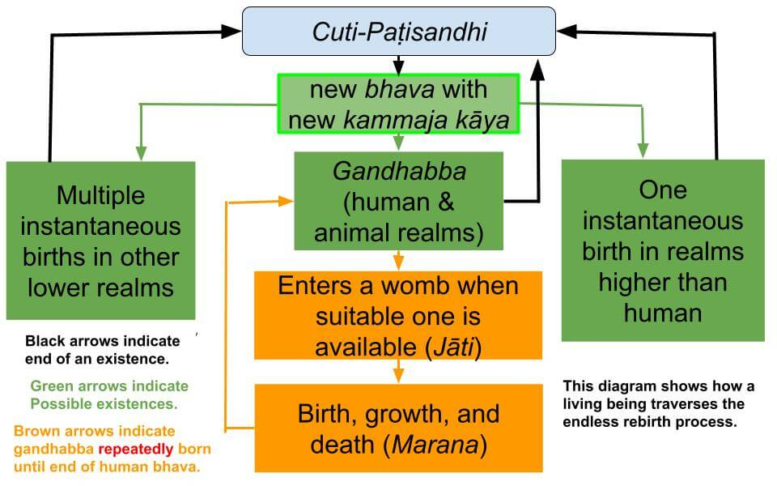

Gandhabba (manomaya kāya), related to paṭisandhi viññāṇa, is a cornerstone concept in Buddhism (Buddha Dhamma.) This essay critiques a recent online discussion with the above title.
November 4, 2022; revised December 3, 2022
Introduction
1. I wrote this essay after reading an essay by Bhikkhu Sujāto and the ensuing discussion: "Does gandhabba mean “semen”?" It is truly saddening to read the essay and the follow-up discussion. There are so many problems with this essay. I will address only three glaring issues.
- The first mistake is to define a sentient being with just the rupa aggregate (in this case, semen.)
- Trying to make sense of the term "gandhabba" using Vedic literature.
- Not comprehending paṭisandhi viññāṇa (and even the general concept of viññāṇa.)
The essay was written on October 24, 2022, and the mindless discussion (based on "semen" as the "seed of life") continues as of today, November 4, 2022. We will first look at the three items listed above.
Rupa (or Rupa Aggregate) Alone Cannot Define a Lifestream in Rebirth Process
2. A sentient being (lifestream) is ALWAYS associated with five aggregates of rupa, vedanā, saññā, saṅkhāra, and viññāṇa.
- All five aggregates may not arise at all times for a living being. For example, only a rupa manifests for a being in the asañña realm because no thoughts arise there.
- However, "past components" of all five aggregates are associated with that asañña satta (being.) Five aggregates DEFINE a living being who has been in the rebirth process from a "beginningless beginning."
- Semen has only the rupa aggregate. Where is the connection to paṭisandhi viññāṇa in semen?
Trying to Explain Buddha Dhamma with Vedic Literature
3. Vedic literature uses the Sanskrit word "gandharva." The author of the essay that started the discussion, Bhikkhu Sujāto, spends most of his essay quoting the Upanishads. See "Does gandhabba mean “semen”?"
- That leads to more confusion than clarity. It is like explaining Paṭicca Samuppada in Buddha Dhamma by discussing "Pratītyasamutpāda," the Vedic version.
- The Buddha spent much time trying to dispel wrong views like those. So, why even discuss Vedic literature?
- I think I know the answer. The author cannot connect paṭisandhi viññāṇa and gandhabba (manomaya kāya.) Thus, he is trying to incorporate things he has learned about gandharva from the Vedas, trying to make sense!
Does the Author Understand Viññāṇa and Paṭisandhi Viññāṇa?
4. The third point is the following. Bhikkhu Sujāto, as well as most English translators of the Tipiṭaka, first need to understand that Pāli words in the Tipiṭaka can have very different meanings depending on the context. To take just one example, viññāṇa SHOULD NOT be translated as "consciousness" in all the suttās. They are still doing it to this date! See "Distortion of Pāli Keywords in Paṭicca Samuppāda."
- They should first understand the difference between vipāka viññāṇa (one of the six types of consciousness: cakkhu, sota, ghāna, jivhā, kāya, mano) and kamma viññāṇa, which is more than "consciousness"!
- Paṭisandhi viññāṇa is a special type of a kamma viññāṇa.
- Now, let us discuss some key concepts in Buddha Dhamma that can shine some light on this issue.
Any Viññāṇa Cannot Exist by Itself Without a Rupa
5. Viññāṇa (including the paṭisandhi viññāṇa in this case) CANNOT arise or be sustained without a rupa.
- Several suttās in SN 22 clearly state “coming and going of (kamma)viññāṇa, its passing away and reappearing, its growth, increase, and maturity” cannot happen in the absence of the other four aggregates (rupa, vedanā, saññā, saṅkhāra). See the “Upaya Sutta (SN 22.53)” I have linked to the specific verse.
- Therefore, a rupa (made of suddhāṭṭhaka) MUST be present to accompany the paṭisandhi viññāṇa, i.e., "a paṭisandhi viññāṇa cannot descend to a womb" without accompanied by a rupa. That is the requirement for a gandhabba!
- Another specific reference is "1.6. Gatikathā" of the Paṭisambhidāmagga, which states, "Paṭisandhikkhaṇe pañcakkhandhā sahajātapaccayā honti,.." or "At the moment of Paṭisandhi all five aggregates (pañcakkhandhā) arise together (sahajāta).."
- Translating "paṭisandhi viññāṇa descending to a womb" literally as "rebirth-consciousness descending to a womb" is similar to the error of translating viññāṇa as consciousness in all situations, as pointed out in "Distortion of Pāli Keywords in Paṭicca Samuppāda." One needs to clearly understand the fundamentals of Buddha Dhamma to correctly translate "succinct (uddēsa) verses" in some suttas. See "Sutta Interpretation – Uddēsa, Niddēsa, Paṭiniddēsa."
Gandhabba (Manomaya Kāya) Is Related to Paṭisandhi Viññāṇa
6. Gandhabba (or manomaya kāya) is born when a being's present existence (bhava) ends, and a new existence is grasped at the cuti-paṭisandhi moment. Cuti means the end of the current existence, and paṭisandhi is grasping another.
- For example, the moment of the end of human existence is the end of a lifetime for that human gandhabba (manomaya kāya) which could be many thousands of years. That gandhabba may be born with many such physical bodies within its lifetime. Between "two consecutive human bodies," that lifestream is in the gandhabba state, with an invisible "manomaya kāya."
- A manomaya kāya of a human has seven suddhāṭṭhaka-size rupa: hadaya vatthu, five pasāda rupa, and bhava dasaka. When that human has a physical human body, the gandhabba is inside it. As explained in the “Mahārāhulovāda Sutta (MN 62),” the physical body itself is lifeless unless a gandhabba is inside; see "Mahārāhulovāda Sutta and Ānāpānasati."
- The cuti citta is immediately followed by the paṭisandhi citta that grasps the next existence. Thus, that paṭisandhi citta is the paṭisandhi viññāṇa (viññāṇa arising at the moment which grasps the next existence.)
7. Simultaneous with grasping the new existence (with paṭisandhi viññāṇa), kammic energy creates the manomaya kāya of the next existence. Regardless of the next existence, certain essential constituents are in that manomaya kāya, including a hadaya vatthu, the seat of mind for the next existence. It is "an energized suddhāṭṭhaka." See #4 of "Manomaya Kāya (Gandhabba) and the Physical Body" and "Gandhabba – Only in Human and Animal Realms."
- For example, if the next existence is an arupāvacara Brahma, its manomaya kāya will have only a hadaya vatthu. That is the only rupa that Brahma would have. A rupāvacara Brahma will have hadaya vatthu and four other dasaka, including two pasāda rupa (cakkhu and sota), thus enabling it to see and hear. Devās will have seven suddhāṭṭhaka-size rupa, just like humans. But they also have instantaneous births (just like the Brahmās); thus, the term gandhabba is not used for any of those (Brahmās and Devās.)

Click to open the pdf file: Births in Different Realms
- Animals are more similar to humans, with the arising of an "animal gandhabba" at the paṭisandhi moment. That gandhabba will be born with a physical body by getting into a womb in the case of apes, dogs, etc., or an egg as in the case of chickens.
8. Everything within the Pāli Tipiṭaka is self-consistent. There is no need to resort to numerous ancient literature just because they exist. Many people believe that expanding to Vedic literature will show one's scholarship. But for those who are interested in learning the actual teachings of the Buddha, those are distractions.
- If people find contradictions within the Tipiṭaka (as many do in discussion forums), it is due to a lack of understanding of basic concepts.
- I laid out the problem in translating viññāṇa as consciousness in the post "Distortion of Pāli Keywords in Paṭicca Samuppāda."
- How can anyone explain deeper concepts like gandhabba or many suttās on deep concepts without understanding viññāṇa?
Comparison to Author's Previous Translations
9. Bhikkhu Sujāto starts the essay by quoting a verse in the "Assalāyana Sutta (MN 93)" (I have linked to that verse)
"Idha mātāpitaro ca sannipatitā honti, mātā ca utunī hoti, gandhabbo ca paccupaṭṭhito hoti; evaṁ tiṇṇaṁ sannipātā gabbhassa avakkanti hotī’ti."
His translation: "An embryo is conceived when these three things come together—the mother and father come together, the mother is in the fertile part of her menstrual cycle, and the spirit being reborn is present."
- So, he has translated "gandhabba" as "the spirit being reborn."
10. The second sutta that he mentioned in his opening essay, "Mahātaṇhāsaṅkhaya Sutta (MN 38)" (I have linked to the same verse as in #9 above)
- His translation is the same as in #9 above.
- Note that there is no explanation of what that "spirit" is!
11. But after discussing the Upanishad's description of "gandharva" he has now changed his mind. To quote from the end of the essay (posted on October 24, 2022):
"Thus, we should translate something like:
An embryo is conceived when these three things come together—the mother and father come together, the mother is in the fertile part of her menstrual cycle, and the virile spirit is potent."
- Note that he has now changed his mind about the translations of MN 93 and MN 38 of the Pāli word "gandhabba" from "the spirit being reborn" to "the virile spirit is potent."
- What made him change his mind?
12. During the discussion, Bhikkhu Sujāto wrote: "The biggest single problem with the later Buddhist idea that “gandhabba = rebirth consciousness” is that there is then little role for the man."
- He got a resolution from the Upanishads!
- To quote from that essay: "Rebirth has a cosmic and organic dimension that is absent from Buddhism. The Kausitiki says “the soul is produced from semen”. The atman is a complex and many-facted idea in the Upanishads, but it is crucial to understand that there is an important thread that sees the individual atman as a quasi-physical entity that is passed to the mother through the semen. It goes without saying that the mother is regarded as merely the incubator of the embryo, not as the source of its atman."
Conclusions
13. To summarize Bhikkhu Sujāto's essay: The "three things" needed for an embryo to be conceived are - the mother and father come together, the mother is in the fertile part of her menstrual cycle, and semen (virile spirit) from the father!
- He may still believe that paṭisandhi viññāṇa needs to "get in" for the conception (even though he left out paṭisandhi viññāṇa in the essay.) However, that still is not compatible with #5 above. It is a gandhabba that "gets in" or "merges with" the zygote produced by the mother's egg and father's sperm; see "Buddhist Explanations of Conception, Abortion, and Contraception."
- As discussed in #8 of "Gandhabba State – Evidence from Tipiṭaka“ the bhāva dasaka - an indicator of the sex of the baby -- also "descends to the womb" at the moment of conception. A gandhabba kāya consists of 7 suddhāṭṭhaka; see #9 of "Gandhabba – Only in Human and Animal Realms."
- Thus, the correct summary is: The "three things" needed for an embryo to be conceived are - the mother and father come together to produce a zygote, the mother is in the fertile part of her menstrual cycle, and a gandhabba created by paṭisandhi viññāṇa! That gandhabba may have been created by kammic energy (in paṭisandhi viññāṇa) even years ago!
14. To illustrate this critical point, let us consider the following case. Suppose a Deva dies (at the end of Deva bhava) and is reborn a human in New York. That Deva grasps the human bhava while in that Deva realm (far above the Earth) with a paṭisandhi viññāṇa. Is he saying that the paṭisandhi viññāṇa then "descends" to the womb in New York at the moment of death of the Deva?
- No. All five aggregates must arise simultaneously at the moment of paṭisandhi (see #5 above.) A human gandhabba (with rupa, vedanā, saññā, saṅkhāra, and viññāṇa) shows up in the human realm at the moment that Deva dies (Here, rupa means the hadaya vatthu (seat of mind) and a set of pasāda rupa in the manomaya kāya of gandhabba.) Getting into a womb can happen even years later. Uncountable Gandhabbas are waiting for a womb!
- Conception in New York can occur precisely at that moment of paṭisandhi (unlikely) or much later (usually).
- The problem is not understanding that grasping human bhava happens at the cuti-paṭisandhi moment (with the creation of a gandhabba by kammic energy). In contrast, birth with a human body (jāti) starts later when that gandhabba enters a womb. See “Bhava and Jāti – States of Existence and Births Therein.”
- For a Tipiṭaka-based discussion on gandhabba with many sutta references, see "Gandhabba State – Evidence from Tipiṭaka.“
15. Note: Forum thread is "Post on “Does Gandhabba Mean “Semen”?”
Gandhabba (manomaya kāya), relacionado ao Paṭisandhi Viññāṇa, é um conceito fundamental no Buddhismo (Buddha Dhamma). Este ensaio faz uma crítica a uma discussão online recente com o título acima.
4 de novembro de 2022; revisado em 3 de dezembro de 2022
Introdução
1. Escrevi este ensaio após ler um texto do Bhikkhu Sujāto e a discussão que se seguiu: “Gandhabba significa ‘sêmen’?” É realmente triste ler o ensaio e a discussão subsequente. Há tantos problemas nesse texto. Abordarei apenas três questões evidentes.
- O primeiro erro é definir um ser senciente apenas pelo agregado de Rūpa (neste caso, o sêmen).
- Tentar dar sentido ao termo “Gandhabba” usando a literatura védica.
- Não compreender o Paṭisandhi Viññāṇa (e nem mesmo o conceito geral de Viññāṇa).
O ensaio foi escrito em 24 de outubro de 2022, e a discussão sem sentido (baseada no “sêmen” como a “semente da vida”) continua até hoje, 4 de novembro de 2022. Analisaremos primeiro os três itens listados acima.
Rūpa (ou Agregado de Rūpa) por Si Só Não Pode Definir um Fluxo de Vida no Processo de Renascimento
2. Um ser senciente (fluxo de vida) está SEMPRE associado aos cinco agregados: Rūpa, Vedanā, Saññā, Saṅkhāra e Viññāṇa.
- Nem sempre os cinco agregados surgem para um ser vivo. Por exemplo, apenas uma Rūpa se manifesta para um ser no reino asañña, pois ali não surgem pensamentos.
- No entanto, os “componentes passados” de todos os cinco agregados estão associados a esse Satta (ser) de asañña. Os cinco agregados DEFINEM um ser vivo que está no processo de Renascimento desde um “início sem início”.
- O sêmen possui apenas o agregado Rūpa. Onde está a conexão com o Paṭisandhi Viññāṇa no sêmen?
Tentando explicar o Buddha Dhamma com a literatura védica
3. A literatura védica usa a palavra sânscrita “gandharva”. O autor do ensaio que deu início à discussão, Bhikkhu Sujāto, dedica a maior parte de seu texto a citar os Upanishads. Veja “Gandhabba significa ‘sêmen’?”
- Isso gera mais confusão do que clareza. É como explicar o Paṭicca Samuppada no Buddha Dhamma discutindo o “Pratītyasamutpāda”, a versão védica.
- O Buddha dedicou muito tempo tentando dissipar visões errôneas como essas. Então, por que sequer discutir a literatura védica?
- Acho que sei a resposta. O autor não consegue estabelecer uma conexão entre Paṭisandhi Viññāṇa e Gandhabba (manomaya Kāya). Assim, ele está tentando incorporar coisas que aprendeu sobre gandharva nos Vedas, na tentativa de dar sentido a tudo isso!
O autor compreende Viññāṇa e Paṭisandhi Viññāṇa?
4. O terceiro ponto é o seguinte. O Bhikkhu Sujāto, assim como a maioria dos tradutores ingleses do Tipiṭaka, precisa primeiro compreender que as palavras em Pālī no Tipiṭaka podem ter significados muito diferentes, dependendo do contexto. Para citar apenas um exemplo, Viññāṇa NÃO DEVE ser traduzido como “consciência” em todas as Suttās. Eles ainda estão fazendo isso até hoje! Veja “Distorção de palavras-chave em Pālī no Paṭicca Samuppāda”.
- Eles deveriam primeiro compreender a diferença entre vipāka viññāṇa (um dos seis tipos de consciência: Cakkhu, Sota, Ghāna, Jivhā, Kāya, Mano) e kamma viññāṇa, que é mais do que “consciência”!
- Paṭisandhi viññāṇa é um tipo especial de Kamma viññāṇa.
- Agora, vamos discutir alguns conceitos-chave do Buddha Dhamma que podem esclarecer essa questão.
Nenhum Viññāṇa pode existir por si só sem um Rūpa
5. O Viññāṇa (incluindo o Paṭisandhi Viññāṇa, neste caso) NÃO PODE surgir ou ser sustentado sem um Rūpa.
- Vários suttas no SN 22 afirmam claramente que “o surgimento e o desaparecimento do (Kamma) Viññāṇa, seu desaparecimento e reaparecimento, seu crescimento, aumento e maturidade” não podem ocorrer na ausência dos outros quatro agregados (Rūpa, Vedanā, Saññā, Saṅkhāra). Consulte o “Upaya Sutta (SN 22.53)”; coloquei o link para o versículo específico.
- Portanto, um Rūpa (composto de Suddhāṭṭhaka) DEVE estar presente para acompanhar o Paṭisandhi Viññāṇa, ou seja, “um Paṭisandhi Viññāṇa não pode descer para um útero” sem estar acompanhado por um Rūpa. Esse é o requisito para um Gandhabba!
- Outra referência específica é “1.6. Gatikathā” do Paṭisambhidāmagga, que afirma: “Paṭisandhikkhaṇe pañcakkhandhā sahajātapaccayā honti,..” ou “No momento do Paṭisandhi, todos os cinco agregados (pañcakkhandhā) surgem juntos (sahajāta)..”
- Traduzir “Paṭisandhi Viññāṇa descendo para um útero” literalmente como “consciência do Renascimento descendo para um útero” é semelhante ao erro de traduzir Viññāṇa como consciência em todas as situações, conforme apontado em “Distorção de palavras-chave em Pālī em Paṭicca Samuppāda”. É preciso compreender claramente os fundamentos do Buddha Dhamma para traduzir corretamente os “versos sucintos (uddēsa)” em algumas Suttā. Consulte “Interpretação dos Suttā – Uddēsa, Niddēsa, Paṭiniddēsa”.
Gandhabba (Manomaya Kāya) está relacionado ao Paṭisandhi Viññāṇa
6. O Gandhabba (ou manomaya Kāya) nasce quando a existência atual (Bhava) de um ser chega ao fim e uma nova existência é agarrada no momento do Paṭisandhi. Cuti significa o fim da existência atual, e Paṭisandhi é a apreensão de outra.
- Por exemplo, o momento do fim da existência humana é o fim de uma vida para aquele Gandhabba humano (manomaya Kāya), que pode durar muitos milhares de anos. Esse Gandhabba pode nascer com muitos desses corpos físicos ao longo de sua vida. Entre “dois corpos humanos consecutivos”, essa corrente de vida encontra-se no estado de Gandhabba, com um “manomaya Kāya” invisível.
- Um manomaya kāya de um ser humano possui sete Rūpa do tamanho de Suddhāṭṭhaka: Hadaya Vatthu, cinco pasāda Rūpa e Bhava Dasaka. Quando esse ser humano possui um corpo físico humano, o Gandhabba está dentro dele. Conforme explicado no “Mahārāhulovāda Sutta (MN 62)”, o próprio corpo físico não tem vida a menos que um Gandhabba esteja dentro dele; veja “Mahārāhulovāda Sutta e Ānāpānasati”.
- A mente de cessação (Cuti citta) é imediatamente seguida pela mente de Paṭisandhi, que se apega à próxima existência. Assim, esse Paṭisandhi Citta é o Paṭisandhi Viññāṇa (Viññāṇa que surge no momento em que se apega à próxima existência).
7. Simultaneamente à apreensão da nova existência (com o Paṭisandhi Viññāṇa), a energia Kamma cria o manomaya Kāya da próxima existência. Independentemente da próxima existência, certos constituintes essenciais estão presentes nesse manomaya Kāya, incluindo um Hadaya Vatthu, a sede da mente para a próxima existência. Trata-se de “um Suddhāṭṭhaka energizado”. Veja o item 4 de “Manomaya Kāya (Gandhabba) e o Corpo Físico” e “Gandhabba – Apenas nos Reinos Humano e Animal”.
- Por exemplo, se a próxima existência for um Brahmā arupāvacara, seu manomaya Kāya terá apenas um Hadaya Vatthu. Essa é a única Rūpa que o Brahmā teria. Um Brahmā rupāvacara terá o Hadaya Vatthu e outros quatro dasaka, incluindo dois pasāda rupa (Cakkhu e sota), o que lhe permite ver e ouvir. Os devas terão sete Rūpa do tamanho de Suddhāṭṭhaka, assim como os humanos. Mas eles também têm nascimentos instantâneos (assim como os Brahmās); portanto, o termo Gandhabba não é usado para nenhum deles (Brahmās e Devās).
Clique para abrir o arquivo PDF: Nascimentos em Diferentes Reinos
- Os animais são mais semelhantes aos seres humanos, com o surgimento de um “Gandhabba animal” no momento do Paṭisandhi. Esse Gandhabba nascerá com um corpo físico ao entrar em um útero, no caso de macacos, cães etc., ou em um ovo, como no caso das galinhas.
8. Tudo no Tipiṭaka Pālī é coerente em si mesmo. Não há necessidade de recorrer a inúmeras obras da literatura antiga apenas porque elas existem. Muitas pessoas acreditam que recorrer à literatura védica demonstrará seu conhecimento acadêmico. Mas, para aqueles que estão interessados em aprender os ensinamentos reais do Buddha, essas são distrações.
- Se as pessoas encontram contradições no Tipiṭaka (como muitas fazem em fóruns de discussão), isso se deve à falta de compreensão dos conceitos básicos.
- Abordei o problema da tradução de Viññāṇa como “consciência” na postagem “Distorção de palavras-chave em Pālī no Paṭicca Samuppāda”.
- Como alguém pode explicar conceitos mais profundos, como Gandhabba, ou muitas Suttā sobre conceitos profundos sem compreender Viññāṇa?
Comparação com traduções anteriores do autor
9. O Bhikkhu Sujāto inicia o ensaio citando um verso do “Assalāyana Sutta (MN 93)” (coloquei o link para esse verso)
“Idha mātāpitaro ca sannipatitā honti, mātā ca utunī hoti, gandhabbo ca paccupaṭṭhito hoti; evaṁ tiṇṇaṁ sannipātā gabbhassa avakkanti hotī’ti.”
Sua tradução: “Um embrião é concebido quando essas três coisas se unem — a mãe e o pai se unem, a mãe está na fase fértil de seu ciclo menstrual e o ser espiritual que está renascendo está presente.”
- Portanto, ele traduziu “Gandhabba” como “o ser espiritual que está renascendo”.
10. O segundo Sutta que ele mencionou em seu ensaio introdutório, “Mahātaṇhāsaṅkhaya Sutta (MN 38)” (coloquei o link para o mesmo versículo do nº 9 acima)
- Sua tradução é a mesma do nº 9 acima.
- Observe que não há nenhuma explicação sobre o que é esse “espírito”!
11. Mas, após discutir a descrição do “gandharva” nos Upanishads, ele mudou de ideia. Para citar o final do ensaio (publicado em 24 de outubro de 2022):
“Portanto, deveríamos traduzir algo como:
Um embrião é concebido quando essas três coisas se unem — a mãe e o pai se unem, a mãe está na fase fértil de seu ciclo menstrual e o espírito viril é potente.”
- Observe que ele agora mudou de ideia sobre as traduções de MN 93 e MN 38 da palavra Pālī “Gandhabba”, passando de “o espírito renascendo” para “o espírito viril é potente”.
- O que o levou a mudar de ideia?
12. Durante a discussão, o Bhikkhu Sujāto escreveu: “O maior problema com a ideia Buddhista posterior de que ‘Gandhabba = consciência do Renascimento’ é que, nesse caso, resta pouco papel para o homem.”
- Ele encontrou uma solução nos Upanishads!
- Para citar esse ensaio: “O Renascimento tem uma dimensão cósmica e orgânica que está ausente no Buddhismo. O Kausitiki diz que ‘a alma é produzida a partir do sêmen’”. O Atman é uma ideia complexa e multifacetada nos Upanishads, mas é fundamental compreender que há uma linha de pensamento importante que vê o Atman individual como uma entidade quase física que é transmitida à mãe por meio do sêmen. É evidente que a mãe é considerada meramente como a incubadora do embrião, e não como a fonte de seu Atman.”
Conclusões
13. Para resumir o ensaio do Bhikkhu Sujāto: As “três coisas” necessárias para que um embrião seja concebido são — a união da mãe e do pai, a mãe estar na fase fértil de seu ciclo menstrual e o sêmen (espírito viril) do pai!
- Ele ainda pode acreditar que o Paṭisandhi Viññāṇa precisa “entrar” para que ocorra a concepção (embora tenha omitido o Paṭisandhi Viññāṇa no ensaio). No entanto, isso ainda não é compatível com o ponto 5 acima. É um Gandhabba que “entra” ou “se funde” com o zigoto produzido pelo óvulo da mãe e pelo espermatozoide do pai; veja “Explicações Buddhistas sobre concepção, aborto e contracepção”.
- Conforme discutido no ponto 8 de “Estado de Gandhabba – Evidências do Tipiṭaka”, o bhāva dasaka — um indicador do sexo do bebê — também “desce para o útero” no momento da concepção. Um gandhabba Kāya consiste em 7 Suddhāṭṭhaka; consulte o nº 9 de “Gandhabba – Somente nos reinos humano e animal”.
- Assim, o resumo correto é: As “três coisas” necessárias para que um embrião seja concebido são — a união da mãe e do pai para produzir um zigoto, a mãe estar na fase fértil de seu ciclo menstrual e um Gandhabba criado pelo Paṭisandhi Viññāṇa! Esse Gandhabba pode ter sido criado pela energia de Kamma (no Paṭisandhi Viññāṇa) há até mesmo anos!
14. Para ilustrar esse ponto crucial, vamos considerar o seguinte caso. Suponhamos que um Deva morra (no final do Deva Bhava) e renasça como humano em Nova York. Esse Deva se apega ao Bhava humano enquanto está naquele reino dos Devā (bem acima da Terra) por meio de um Paṭisandhi Viññāṇa. Ele está dizendo que o Paṭisandhi Viññāṇa então “desce” para o útero em Nova York no momento da morte do Deva?
- Não. Todos os cinco agregados devem surgir simultaneamente no momento do Paṭisandhi (veja o ponto 5 acima). Um Gandhabba humano (com Rūpa, Vedanā, Saññā, Saṅkhāra e Viññāṇa) surge no reino humano no momento em que o Deva morre (aqui, Rūpa significa o Hadaya Vatthu [sede da mente] e um conjunto de pasāda rupa no manomaya Kāya do Gandhabba). A entrada no útero pode ocorrer até mesmo anos depois. Inúmeros Gandhabbas estão aguardando um útero!
- A concepção em Nova York pode ocorrer precisamente naquele momento de Paṭisandhi (improvável) ou muito mais tarde (geralmente).
- O problema é não compreender que a apreensão do Bhava humano ocorre no momento do Paṭisandhi (com a criação de um Gandhabba pela energia de Kamma). Em contrapartida, o nascimento com um corpo humano (Jāti) começa mais tarde, quando esse Gandhabba entra no útero. Veja “Bhava e Jāti – Estados de Existência e Nascimentos Neles”.
- Para uma discussão baseada no Tipiṭaka sobre o Gandhabba, com muitas referências a Suttā, consulte “Estado de Gandhabba – Evidências do Tipiṭaka”.
15. Observação: o tópico do fórum é “Postagem sobre ‘Gandhabba significa “sêmen”?’”